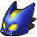

The search began for the last elemental sage. Link found his way to the Guerdo Desert and a broken bridge over a deep chasm. He uses the Longshot to get over it with ease and continues on to the Geurdo's Fortress, where the moment he is scene he is captured and put into a prison cell for being unwanted here. He's able to escape yet again with the Longshot and begins to search around the fortress, rescuing four carpenters from cells in the process before having to fight a Guerdo Warrior each time. After the fourth he is given a token to commend his courage. With this he contineus onto the haunted wasteland, a desert in a continuous sandstorm. A ghost offers to lead him to the Desert Colossus beyond through the sandstorm, but not the way back. After reaching the Desert Colossous he enters into the Spirit Temple with no route to take, as both entrances are blocked off, when he steps outside he finds Shiek yet again, teaching him his final song: The Requiem of Spirit. With nowhere to go inside of the temple, he returns to it as a child finding a Guerdo named Nabooru wanting to get the treasure on the inside of the temple, but isn't able to squeeze into a small tunnel to get it. Instead she offers Link to get it for her since as a kid, he is small enough to fit, he agrees. The treasure at the end of this small section of the temple, the Silver Gauntlets, which he could use as an adult but made a promise to Nabooru. Link also discovers a new type of bomb, a bombchu which is self-propelled. Link soon gets to an outside portion of the temple, yet from a high ledge, to tell Nabooru he had the treasure and would return, only to see her being kidnapped by twin witches, Koume and Kotake. Link is able to keep the silver gauntlets, returning as an adult and destroying the large obstacle that blocked off the rest of the temple. In the larger part of this temple, Link acquires a mirror shield, able to bounce light off of its face. Link used the mirror shield to destroy the face of a large statue in the center room of the temple, bringing him to a smaller room and having to deal with an enemy named Iron Knuckle, he finds that it was Nabooru underneath the armor, before being kidnapped again by the witches who run to a further room. This brings him to an extremely large room with a raised platform, it is here he fights Twinrova, a merged form between the sisters of fire and ice. After this fight he wakes Nabooru as the Sage of Spirit, and gains the Spirit Medallion.
| PICTURE | NAME | DESCRIPTION |
|---|---|---|
|  | Bombchu | Self-propelled bomb |
|
Silver Gauntlets | Lets adult Link pick up heavier objects |
|
Mirror Shield | Bounces light like a mirror |
| Spirit Medallion | Given by Nabooru |